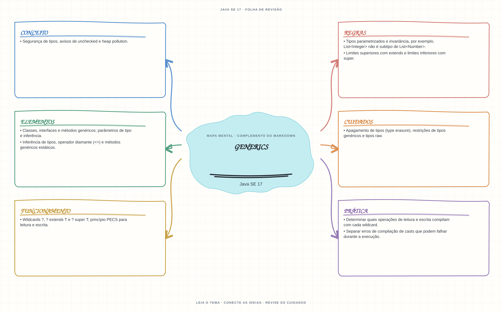

Ver mapa mental deste assuntoLer limites e wildcards para preservar segurança de tipos e saber quais operações são válidas.
Primeiro contato: aprenda o conceito e pratique antes de consultar os detalhes de prova. Voltar aos fundamentos se algum termo ainda for novo.
- Leia o objetivo e localize a ideia principal no conteúdo abaixo.
- Preveja o resultado, compile e execute o exemplo.
- Faça a atividade sem copiar a solução e confira a checagem comentada.
EXEMPLO DE CONSOLE
Veja a regra em execução
Antes de executar, anote sua previsão. Compile o exemplo com o JDK e compare a saída observada com as regras deste assunto.
Comandos para compilar e executar
javac -d target/bin src/05-arrays-e-colecoes/generics/GenericsExample.java
java -cp target/bin GenericsExampleA execução imprime o resultado no console para você comparar com sua previsão.
Consultar código-fonte: GenericsExample.java
import java.util.ArrayList;
import java.util.List;
public class GenericsExample {
private static <T> void copiar(List<? extends T> origem, List<? super T> destino) {
for (T valor : origem) {
destino.add(valor);
}
}
private static double somar(List<? extends Number> valores) {
double soma = 0;
for (Number valor : valores) {
soma += valor.doubleValue();
}
return soma;
}
public static void main(String[] args) {
System.out.println("=== Generics e wildcards ===");
System.out.println("? extends Number permite ler elementos como Number.");
List<Integer> notas = new ArrayList<>(List.of(8, 9, 10));
List<Number> resultados = new ArrayList<>();
copiar(notas, resultados);
System.out.println("Soma de List<Integer> recebida como List<? extends Number>: "
+ somar(notas));
System.out.println("Copiando de List<? extends Integer> para List<? super Integer>: "
+ resultados);
}
}
PRATIQUE AGORA
Faça uma pequena alteração por conta própria
Crie uma List<String>, adicione três nomes e percorra a lista sem casts.
Concluído quando: o programa compilar, produzir o resultado esperado e você conseguir explicar a regra aplicada.
CHECAGEM RÁPIDA · Generics
Em List<? extends Number>, é seguro adicionar um Integer?
Conferir resposta comentada
Não: o tipo exato da lista pode ser List<Double>. A referência permite leitura como Number, mas restringe inserções (princípio PECS).
Estude
- Classes, interfaces e métodos genéricos; parâmetros de tipo e inferência.
- Tipos parametrizados e invariância, por exemplo,
List<Integer>não é subtipo deList<Number>. - Limites superiores com
extendse limites inferiores comsuper. - Wildcards
?,? extends Te? super T; princípio PECS para leitura e escrita. - Inferência de tipos, operador diamante (
<>) e métodos genéricos estáticos. - Apagamento de tipos (type erasure), restrições de tipos genéricos e tipos raw.
- Segurança de tipos, avisos de unchecked e heap pollution.
Verifique se consegue
- Determinar quais operações de leitura e escrita compilam com cada wildcard.
- Separar erros de compilação de casts que podem falhar durante a execução.
Como este capítulo se relaciona com cada exame
Fundamentos reaproveitáveis; confira versão e APIs cobradas em Java 8.
Base de estudo deste portal; confirme o mapeamento com o blueprint vigente.
Conceitos úteis; revise também Sequenced Collections no Java 21.
Orientação editorial sobre reaproveitamento do material; não representa objetivos oficiais nem garante cobertura do exame. Consulte o comparativo e as fontes da Oracle.